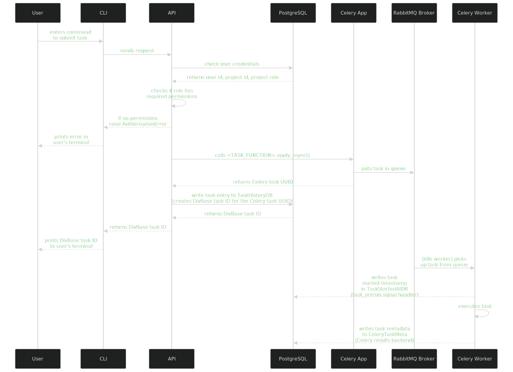

Celery task implementation in DivBase¶
DivBase uses Celery as an asynchronous job management system. This document aims to describe how Celery tasks are implemented in the DivBase system architechture. The document can serve as a guide for maintaining and updating existing tasks, as well as implementing new tasks. It is intended to be a complement to the official Celery documentation, so please refer to them in addition to this.
As a rule-of-thumb, Celery tasks are intended to be used for operations that have a runtime that is longer than what is suitable for an asynchronous database transaction. In practice, operations that require interacting with files in an S3 bucket (including parsing the content of the files) should be run as a Celery task. If you want to implement a new function in DivBase that only relies on calling a CRUD function, it is better to do this directly in the API endpoint rather than enqueing a Celery task with the same logic.
Tasks can be divided by how they are submitted to the queue: user-submitted tasks, and system-submitted periodic tasks. User-submitted tasks are manually enqueued in the job management system by entering a command on in the DivBase CLI. System-submitted periodic tasks are cronjobs that are enqueued based on a time schedule, and typically handle system maintenance tasks such as cleanup jobs.
Assuming that a task has been implemented as decribed in this document, DivBase users can access their task history with the divbase-cli task-history command. Please see Task History Implementation for details on how the task history works.
Table of Contents¶
- 1. Overview
- 2. Implementation of user-submitted tasks
- 2.1 Task Definition
- 2.2. Pydantic models
- 2.3. API endpoint
- 2.4. CLI
- 2.5. Task History deserialization
- 3. Implementation of system-submitted periodic (cron) tasks
1. Overview¶
Tasks are generally executed asynchronously and can possibly take a bit of time to run. This means that queing tasks and fetching task results are treated as two separate processes with their own CLI commands*. For instance, a user might send a VCF file query task with the divbase-cli query bcftools-pipe CLI command; they can then run the divbase-cli task-history user command to learn the status of the job (queuing, started, sucess, failed) and any result or error messages. This document describes the steps needed to fully implement a task in Divbase, including a CLI command to schedule the task, and the steps needed to make the task work with the task history command. Details on how the task history architechture works is not covered in this document.
* One exception is sample_metadata_query_task that is assumed to run so quickly that it waits for results to be returned back to the user's terminal. The task is enqueued as an asynchronous celery task like any other task, with the difference that the API layer waits for the task layer to return the results so that the API in turn can return that to the users terminal.
DivBase uses a layered architechture and therefore task implementations occur at several layers. Roughly speaking, there is a Celery worker layer where the Celery app and its tasks are defined (including task metadata writes to database), an API layer that handles routing and some other required database operations, and a CLI layer that handles sending a task from the user's client to a specific API endpoint. The typicall task signal flow in DivBase looks like the following, starting from the user input:

Figure 1: Sequence diagram of the task signal flow in DivBase. Note that this diagram only shows submission and execution of tasks; to fetch the result of a task, users need to use the task history CLI command, which is not included in this diagram. Please see Task History Implementation for details on that command.
2. Implementation of user-submitted tasks¶
For a user-submitted task to be fully integrated in DivBase, it needs to be implemented in five different layers, as described in the subsections below. Doing so ensures that the task can be enqued and executed in the job system, and ensures that the task results can be correctly returned to the user with the task history CLI command.
2.1 Task Definition¶
- Tasks are defined in
./packages/divbase-api/src/divbase_api/worker/tasks.py - Towards the top of the file are the Celery app defintions in
app = Celery()andapp.conf.update(). These should not be altered unless refactoring the celery app specifically. The Celery results backend handles writing of task metadata to theCeleryTaskMetatable in the postgreSQL database. - Two Celery signal handlers are used to write to additional postgreSQL tables to capture values that are not included in
CeleryTaskMeta. Like the Celery app, these should not be altered unless they are part of a refactoring. - The
after_task_publishsignal handler handles cron jobs specifically. This signal fires when a task is published to the queue. If the task name begins withcron_taskan entry is written toTaskHistoryDB. For user-submitted tasks, the writes toTaskHistoryDBare handled by the API, as described below in Section 2.3. - The
task_prerunsignal handler fires when an idle worker picks up a task from the queue and changes its status toSTARTED. This signal triggeres a write of astarted_attimestamp to theTaskStartedAtDBtable. This is used by the task history logic to calculate the runtime of a task. - A user-submitted task in DivBase is a function decorated with
@app.task(tasks.<NAME>). It is possible to tag the tasks with labels, such astags=["slow"]. These tags could potentially be used by other Celery logic, such as task routing, but the use of tags is optional in DivBase tasks. - For clarity, suffix the function name with
_task, e.g.def <FUNCTION_NAME>_task(). There is no logic that uses the suffix, so its function is to signal to the developer that this is a task function. - Define the task arguments and their type hints just like any other Python function. There are no mandatory args for DivBase tasks, but there are some patterns that can be reused. For instance, if the task logic will interact with S3, add
bucket_name: str,Tasks that interact with VCF dimensions table needproject_id: int,for theget_vcf_metadata_by_project()helper function andproject_name: str,for exceptions. - The logic inside the task can be anything, but typically include reading file(s) from S3 and acting on them.
- Divbase tasks can include database transaction (see next bullet below for more details), but if the task only does a database CRUD it would be better to implement that as an async database CRUD in the API layer rather than a Celery task since that is likely faster and does not require a Celery worker.
- There are existing helper functions for S3 operations (e.g.
create_s3_file_manager(),_download_vcf_files(),_delete_job_files_from_worker()) and VCF dimensions metadata table transactions (e.g.get_vcf_metadata_by_project(),get_skipped_vcfs_by_project_worker(),create_or_update_vcf_metadata()). Look at previous tasks to see if there are existing helper functions or logic that can be reused. - Database transactions can be called from the task using the
SyncSessionLocal()sessionmaker instance from SQLAlchemy. There is no point in trying to use async database sessions in DivBase Celery tasks since tasks are run in dedicated worker containers/pods and inside a Celery event pool (see the Celery docs forpreforkpools). Furthermore, since Celery does not provide a simple way to use the async event loops from SQLAlchemy. Experiments during DivBase development showed that it is technically possible to implement workarounds to use async db sessions in tasks executed by Celery workers, but that it can easily result in event pool issues and errors. - Raise errors in the task function (catching any errors proprageted from potential helper fuctions called by the task). This assures that
CeleryTaskMetais correctly updated with task statusFAILUREand the error message. This assures that the task history CLI command correctly prints this information in the user's terminal. If errors are returned in any other way that with araise, there is a risk that the status of the task becomesSUCESSeven if it exited due to errors. - Tasks end with a
returnstatement. This is written to theresultsfield inCeleryTaskMeta. Celery will usepickleto serialize the results for storage in theCeleryTaskMetatable. - For best compatibility, return a dictionary containing e.g. messages and values from the task.
- Note! Celery cannot handle serialisation of Pydantic models so they cannot be directlty in the return. It is possible to have a helper function return a Pydantic model to the task, but then this needs to be dumped to Python dict with
<PYDANTIC_MODEL_NAME>.model_dump(). - Perhaps a little unintutive given the last subbullet above, but DivBase task input and outputs should preferrably be structured as Pydantic models since this gives benefits elsewhere in the codebase. Details on this is covered in Section 2.2.
- Dynamtic task routing is optional
Example of a task defintion:
# This assumes that this is in tasks.py and that the celery app is defined somewhere above this example function
@app.task(name="tasks.example")
def example_task(
my_input_parameter: str,
bucket_name: str,
project_id: int,
project_name: str,
):
# To get the Celery Task UUID, for instance for logging and error messages, use:
task_id = example_task.request.id
logger.info(f"Starting bcftools_pipe_task with Celery, task ID: {task_id}")
# Example of how to add database transactions to a task by using the sync database session:
with SyncSessionLocal() as db:
vcf_dimensions_data = get_vcf_metadata_by_project(project_id=project_id, db=db)
# Raise errors inside the task to ensure that the task is masked as FAILED in CeleryTaskMeta.
# Some custom exceptions exist that can take variables such as project name or task UUID
if not vcf_dimensions_data.get("vcf_files"):
raise VCFDimensionsEntryMissingError(project_name=project_name)
# Add any logic that the task should perform,
calculated_value = my_function(my_input_parameter)
# The returns should preferrably be a dict (or a Pydantic model dump) to be compatible with Celery serilisation
return {"status": "completed", "calculated_value": calculated_value}
For a longer example, please look at bcftools_pipe_task() in tasks.py. The other examples in this document will refer to aspects of bcftools_pipe_task(), but for brevity, a toy task was used here instead.
2.2. Pydantic models¶
DivBase use Pydantic models for strong typing, type validation, and as self-documenting data structures. Support for Pydantic model validation comes out-of-the-box with fastAPI, which is the API service used in DivBase. As described in Section 2,1, the Celery task itself cannot return Pydantic models (this is a limiation of Celery). Other than that, Pydantic models are used for all requests and responses to/from the API, including when users submit tasks and request task history to/from the DivBase server.
In DivBase, Pydantic models are used together with Celery tasks in the following way:
- In the folder in
./packages/divbase-lib/src/divbase_lib/api_schemas/, add a request model (send from the CLI to the API), a task kwargs model (send by the API to Celery), and a response model for the task results (used when returning task results with the task history CLI command). - Also register those models in
TaskHistoryResultPydantic mdoel in./packages/divbase-lib/src/divbase_lib/api_schemas/task_history.pyso that they are correctly returned to the user when the run the task history CLI command. Place request and results models in a relevant schema file within the api_schemas (e.g.,queries.py,vcf_dimensions.py, or a new one with a name of your choice).
Example of a request, task kwargs, and results model for a task named BcftoolsQuery:
class BcftoolsQueryRequest(BaseModel):
"""Request model for sample metadata query route."""
tsv_filter: str
metadata_tsv_name: str
command: str
class BcftoolsQueryKwargs(BaseModel):
"""Keyword arguments for BCFtools query task. Used to pass info to Celery task, and also for recording task history."""
tsv_filter: str
command: str
metadata_tsv_name: str
bucket_name: str
project_id: int
project_name: str
user_id: int
class BcftoolsQueryTaskResult(BaseModel):
"""BCFtools query task result details. Based on the return of tasks.bcftools_query."""
output_file: str
status: Optional[str] = None
And then add the task kwargs and task results models TaskHistoryResult in ./packages/divbase-lib/src/divbase_lib/api_schemas/task_history.py:
class TaskHistoryResult(BaseModel):
"""
Task details as returned by queries to the SQAlchemy+pg results backend.
"""
id: int
submitter_email: Optional[str] = None
status: Optional[str] = None
result: Optional[
Union[
dict[
str, Any
], # Note! This dict must come first here so that error results are preserved and not incorrectly inserted into the result models
SampleMetadataQueryTaskResult,
BcftoolsQueryTaskResult, # Task result model from above example
DimensionUpdateTaskResult,
]
] = None
date_done: Optional[str] = None
name: Optional[str] = None
args: Optional[str] = None
kwargs: Optional[
Union[
SampleMetadataQueryKwargs,
BcftoolsQueryKwargs, # Task kwargs model from above example
DimensionUpdateKwargs,
]
] = None
worker: Optional[str] = None
created_at: Optional[str] = None
started_at: Optional[str] = None
completed_at: Optional[str] = None
runtime: Optional[float] = None
2.3. API endpoint¶
- API endpoints for enqueueing tasks are found in files the folder:
./packages/divbase-api/src/divbase_api/routes/ - Endpoint functions are decorated on the form
@query_router.post("<ENDPOINT_URL>", status_code=status.HTTP_201_CREATED), where<ENDPOINT_URL>should be a RESTful URL such as/bcftools-pipe/projects/{project_name} - To make use of fastAPIs async worker threads, define the function as
async def <ENDPOINT_FUNCTION_NAME>() - The endpoint function has several required arguments: the Pydantic Request model (see Section 2.2.) and three helper arguments / fastAPI dependency injections. The Pydantic model is used to convert the incoming payload into the model and validate its types (see Section 2.4 for how the CLI uses and serializes the same Pydantic model in the request).
python
async def my_endpoint_function(
my_request_model: MyRequestModel,
project_name: str,
project_and_user_and_role: tuple[ProjectDB, UserDB, ProjectRoles] = Depends(get_project_member),
db: AsyncSession = Depends(get_db),
)
- The dependency injection in
project_and_user_and_roleand the helper functionhas_required_roleare used to connect to the database and check that the user has permission to submit tasks to this project. See the example below for how to use it in an endpoint function. - To enqueue the task function defined in
tasks.pyin the job system, useresult = <TASK_FUNCTION>.apply_async(). This returns some initial Celery task metadata, including the Celery task UUID. - The established pattern in DivBase is - for clarity - to call
.apply_async()with keyword arguments and not arguments. Specifically, the Pydantic kwargs model can be populated, and then dumped in to Python dict in.apply_async()since Celery cannot de/serialise Pydantic mdoels. This ensures that kwarg types are validated before enqueuing the task. - Call the
create_task_history_entry()CRUD function to record the Celery task UUID inTaskHistoryDBalong with user and project ID. This function will return the DivBase task ID, which is the autoincrementing id from the postgreSQL table. This is an integer and much easier for the users to handle than long UUIDs. - Finally, return the DivBase task ID to the user client as an API reponse.
Example of an API endpoint. This pattern can more or less be used as boilerplate code when creating new endpoints for user-submitted tasks.
@query_router.post("/bcftools-pipe/projects/{project_name}", status_code=status.HTTP_201_CREATED)
async def create_bcftools_jobs(
bcftools_query_request: BcftoolsQueryRequest,
project_name: str,
project_and_user_and_role: tuple[ProjectDB, UserDB, ProjectRoles] = Depends(get_project_member),
db: AsyncSession = Depends(get_db),
) -> int:
"""
Create a new bcftools query job for the specified project.
"""
# Standard DivBase pattern to check if user has permission to submit a task to a specific project.
# First calls a helper function that makes a lookup of user credentials in the database.
# Assumes that the CLI sent the request using make_authenticated_request(), see Section 2.4.
project, current_user, role = project_and_user_and_role
# Then calls on another helper function to check if the credentials are enough to grant permission
if not has_required_role(role, ProjectRoles.EDIT):
raise AuthorizationError("You don't have permission to query this project.")
# Pack the required task arguments in the corresponding Pydantic model (see Section 2.2.)
# This ensures that the kwargs are type validated
task_kwargs = BcftoolsQueryKwargs(
tsv_filter=bcftools_query_request.tsv_filter,
command=bcftools_query_request.command,
metadata_tsv_name=bcftools_query_request.metadata_tsv_name,
bucket_name=project.bucket_name,
project_id=project.id,
project_name=project.name,
)
# Send the task to the Celery app, which enqueues it in the job system broker.
# Note that the kwargs Pydantic model is dumped already here. This is due to a limitation in Celery's deserialization. It may seem redundant, but this way the the kwarg types have been validated by Pydantic.
results = bcftools_pipe_task.apply_async(kwargs=task_kwargs.model_dump())
# Call a helper CRUD function to create an entry in TaskHistoryDB that maps Celery Task UUID,
# User_id, and project_id. The auto-incremented table id is returned. This will now serve as
# the DivBase task ID, since it it an int and less unwieldy than a full UUID.
job_id = await create_task_history_entry(
user_id=current_user.id,
project_id=project.id,
task_id=results.id,
db=db,
)
# As a API response, return the DivBase task ID to the CLI client that made the request, where it can be displayed to the user.
return job_id
Note on a special case: if a task returns is return result directly from the API endpoint (currently, only implemented in sample_metadata_query_task() since it is considered to be a very quick task), the endpoint decorator can contain the Pydantic results model (see Section 2.2.) as response_model=SampleMetadataQueryTaskResult. If used this way, fastAPI will validate the model before returning it, and raise an error if the returned data structure does not match the types of the Pydantic model.
@query_router.post(
"/sample-metadata/projects/{project_name}",
status_code=status.HTTP_200_OK,
response_model=SampleMetadataQueryTaskResult,
)
2.4. CLI¶
The DivBase client uses the Typer library to build its CLI. This part of the docs will not explain how the DivBase Typer architechture was setup, but will focus on adding a new CLI command to submit a task to the DivBase server.
- The CLI commands are defined in files in the folder
./packages/divbase-cli/src/divbase_cli/cli_commands/. The CLI commands make requests to the API and gets responses back. For task-submitting requests, the CLI commands send task args to the corresponding API endpoint based on the user's CLI input. - There needs to be a Typer app (on the form
query_app = typer.Typer()) to which the CLI command functions needs to be connected. The app needs to be initiated withapp.add_typer(query_app, name="query")in./packages/divbase-cli/src/divbase_cli/divbase_cli.py. - The typer app name is used as a decorator for the function, e.g.
@query_app.command("bcftools-pipe"). The argument of the decorator will become the command for the CLI. - Pack the task arguments in the Pydantic request model (see Section 2.2), e.g.
request_data=BcftoolsQueryRequest()for type validation. - The
resolve_project()helper function is be used to fetch the data from the users local config and is needed for the established pattern to make the request. This helper function need that the CLI function args containproject: str | None = PROJECT_NAME_OPTION,andconfig_file: Path = CONFIG_FILE_OPTION,. See an existing CLI file for more details on the constants they are calling. - The main function call for all DivBase CLI->API interactions is
make_authenticated_request(). If the user is logged in to the CLI, it sends the user's JSON Web Token as part of the request, which the API uses to validate the user's identity and project role/permissions. - The arguments
method="POST",divbase_base_url=project_config.divbase_urlshould always be included as is. api_routeis the route URL defined in the corresponding endpoint (see Section 2.3).json=request_data.model_dump()is used to serialise the Pydantic model to Python dict so that it can be passed as JSON in the request payload. The API endpoint will take this input and pack it back into the corresponding Pydantic model if everthing has been configured as described in Section 2.3.
Example:
# Define a Typer app
query_app = typer.Typer(
help="Run queries on the VCF files stored in the project's storage bucket. Queries are run on the DivBase API",
no_args_is_help=True,
)
@query_app.command("bcftools-pipe")
def pipe_query(
tsv_filter: str = typer.Option(None, help=TSV_FILTER_HELP_TEXT),
command: str = BCFTOOLS_ARGUMENT,
metadata_tsv_name: str = METADATA_TSV_ARGUMENT,
project: str | None = PROJECT_NAME_OPTION,
config_file: Path = CONFIG_FILE_OPTION,
) -> None:
"""
Submit a query to run on the DivBase API. A single, merged VCF file will be added to the project's storage bucket on success.
"""
# Helper function that fetches project information from the users local config file
project_config = resolve_project(project_name=project, config_path=config_file)
# Pack the required task arguments in the corresponding Pydantic model (see Section 2.2.)
# This ensures that the kwargs are type validated
request_data = BcftoolsQueryRequest(tsv_filter=tsv_filter, command=command, metadata_tsv_name=metadata_tsv_name)
# Call an helper function to send a request to the API. If the user is logged in to the CLI,
# the function passes a JWT token to the API that is used to verify the user's identity and permissions
response = make_authenticated_request(
method="POST",
divbase_base_url=project_config.divbase_url,
api_route=f"v1/query/bcftools-pipe/projects/{project_config.name}",
json=request_data.model_dump(), # serialize the Pydantic model to Python dict since the API expects JSON. On the API side, it converted back to the Pydantic model.
)
# Using the pattern described in Section 2.3, the API returns the DivBase task ID, which can be displayed to the user in their terminal like such:
task_id = response.json()
print(f"Job submitted successfully with task id: {task_id}")
2.5. Task History deserialization¶
The steps covered in Sections 2.1-2.4 are enough to implement tasks that can be submitted and executed. But in order to fetch the results from task, it the task history deserialiser also need to be updated to contain the kwargs and results Pydantic models from the task.
- The deserialiser is located in
./packages/divbase-api/src/divbase_api/services/task_history.py. - Update
_deserialize_celery_task_metadatato handle your new task’s result and kwargs schemas. - Under the
else:clause shown in the below example, add an if statement with the name of the taskif task_name ==<TASK_NAME>, where<TASK_NAME>is the name that was defined in the task decorator in Section 2.1. E.g.if task_name ==tasks.bcftools_query, referring to the task name defined in@app.task(tasks.bcftools_query). - In the if statement, specify the results and kwargs models of the tasks using:
parsed_result = <TASK_RESULTS_PYDANTIC_MODEL>(**result_data) if result_data else None
parsed_kwargs = <TASK_KWARGS_PYDANTIC_MODEL>(**kwargs) if kwargs else None
- By following these patterns, the task history deserialiser should now be able to correctly deserialise and inser the task metadata into the
TaskHistoryResultsmodel for return to the user. - The Starlette-admin panel is already configured for deserialisation of the task history results using its own logic. It does not rely on Pydantic models in the same way that the task history CLI does, and therefore no additions are needed to be made in (
./packages/divbase-api/src/divbase_api/admin_panel.py).
Example:
def _deserialize_celery_task_metadata(task: dict) -> TaskHistoryResult:
# ... Scroll down to this section of the function
is_error_result = isinstance(result_data, dict) and (
"exc_type" in result_data or "exc_message" in result_data or result_data.get("status") == "error"
)
if is_error_result:
parsed_result = result_data
parsed_kwargs = kwargs
else:
if task_name == "tasks.sample_metadata_query":
parsed_result = SampleMetadataQueryTaskResult(**result_data) if result_data else None
parsed_kwargs = SampleMetadataQueryKwargs(**kwargs) if kwargs else None
elif task_name == "tasks.bcftools_query":
parsed_result = BcftoolsQueryTaskResult(**result_data) if result_data else None
parsed_kwargs = BcftoolsQueryKwargs(**kwargs) if kwargs else None
elif task_name == "tasks.update_vcf_dimensions_task":
parsed_result = DimensionUpdateTaskResult(**result_data) if result_data else None
parsed_kwargs = DimensionUpdateKwargs(**kwargs) if kwargs else None
else:
# Fallback for Unknown task type - keep everything as dicts
parsed_result = result_data
parsed_kwargs = kwargs
# ... Code continues, does not need to be updated
3. Implementation of system-submitted periodic (cron) tasks¶
DivBase uses Celery Beat for periodic tasks to schedule certain system operations. This for instance include cleanup of dangling task history entries in the database and other jobs that relate to interal states of the system components (often the PostgreSQL database). Note that system deployment level periodic tasks, such as database backup, is NOT handled by the Celery Beat tasks. This text will use the concept cron task, (Celery) Beat task, and periodic task interchangably.
- The tasks are defined in
./packages/divbase-api/src/divbase_api/worker/cron_tasks.pyto separate them from the user-submitted tasks. A small workaround is needed to make this work: at the bottom oftasks.pyis an import statement for the cron tasks asfrom divbase_api.worker import cron_tasks # noqa: E402, F401. This needs to come at the bottom to avoid issues with Celery app initiation timings and circular imports and should never need to be altered unless during a refactoring. - Celery Beat needs to be enabled in the Celery app or a specific worker container. Please refer to the Celery doc. This is already configured for the DivBase Docker Compose stack used for local dev, but may need to configured differently for deployment to a cluster environment.
- Because of this setup, the cron tasks can be decorated with reference to same Celery app as the user-submitted tasks. Add
@app.task(name="cron_tasks.<NAME>")above the task function definition like before. NOTE! In DivBase, it is important that the periodic task names are prefixed bycron_tasks.: there is logic in the signal handlers that make use of this; also it give a clear distinction from the user-submitted tasks that start withtask. - The Beat tasks are configured to writes to the three task history tables (
TaskHistoryDB,TaskStartedAtDB,CeleryTaskMeta) just like the user-submitted tasks. Since these tasks are intended for internal use, their task metadata can only be viewed from the Starlette-admin panel and not from the task history CLI command. - The write to
TaskHistoryDBis handled by the@after_task_publishCelery signal handler intasks.py. For comparison, user-submitted tasks are writted toTaskHistoryDBby the API and returns the DivBase task ID. The cron task does not use neither the API nor the DivBase task ID, and thus this signal handler that fires when the task is enqueued in the broker is used instead. (Technically, all Celery tasks will trigger the@after_task_publishfunction, but only tasks with a name that starts withcron_task.will be processed by the function logic.) To further mark that the task belongs to the system and not to any user, the signal handler ensures that the inserted row inTaskHistoryDBwill useuser_id=None, project_id=None. - The other two tables are written to with the same logic as for the user-submitted tasks: when the task starts, the
@task_prerunsignal will write toTaskStartedAtDB, and the Celery results backend will write toCeleryTaskMetaduring task execution. - Definiton of the actualy task logic work just like described in Section 2.1. E.g. connect to databse with SyncSessionLocal() if needed, raise exception in the main task, return result messages, etc.
- The main difference compared to the user-submitted tasks is that the cron tasks are scheduled to submitted to the Celery queue with
app.conf.beat_schedule. This is a nested dictionary in which the frequency and arguments for a cron task is configured. - The frequency is set with
crontab. See the Celery docs on periodic tasks for more details.
Example of a DivBase cron task definition:
@app.task(name="cron_tasks.cleanup_old_task_history")
def cleanup_old_task_history_task(retention_days: int = TASK_RETENTION_DAYS):
"""
Periodic task to clean up old task history entries from both TaskHistoryDB and CeleryTaskMeta.
Runs daily to remove entries older than retention_days.
"""
try:
cutoff_date = datetime.now(timezone.utc) - timedelta(days=retention_days)
with SyncSessionLocal() as db:
old_task_ids = [
row[0]
for row in db.execute(
text("SELECT task_id FROM task_history WHERE created_at < :cutoff_date"),
{"cutoff_date": cutoff_date},
).fetchall()
]
deleted_celery_task_meta = db.execute(
delete(CeleryTaskMeta).where(CeleryTaskMeta.task_id.in_(old_task_ids))
).rowcount
deleted_task_history = db.execute(
delete(TaskHistoryDB).where(TaskHistoryDB.task_id.in_(old_task_ids))
).rowcount
deleted_started_at = db.execute(
delete(TaskStartedAtDB).where(TaskStartedAtDB.task_id.in_(old_task_ids))
).rowcount
db.commit()
logger.info(
f"Cleaned up {deleted_celery_task_meta} entries from CeleryTaskMeta, "
f"{deleted_task_history} from TaskHistoryDB, and "
f"{deleted_started_at} from TaskStartedAtDB older than {retention_days} days "
f"(cutoff: {cutoff_date.isoformat()})"
)
return {
"status": "completed",
"number_of_celery_meta_deleted": deleted_celery_task_meta,
"number_of_task_history_deleted": deleted_task_history,
"number_of_started_at_deleted": deleted_started_at,
"cutoff_date": cutoff_date.isoformat(),
"retention_days": retention_days,
}
except Exception as e:
logger.error(f"Failed to cleanup old task history: {e}")
raise
Example of how a app.conf.beat_schedule configuration:
app.conf.beat_schedule = {
"cleanup-old-tasks-daily": {
"task": "cron_tasks.cleanup_old_task_history",
"schedule": crontab(
hour=5, minute=0
), # Run daily at 5 AM CET (timezone defined in app in tasks.py). Don't set to 2 AM or 3 AM due to daylight saving
"kwargs": {"retention_days": TASK_RETENTION_DAYS},
},
"cleanup-stuck-tasks-daily": {
"task": "cron_tasks.cleanup_stuck_tasks",
"schedule": crontab(
hour=5, minute=15
), # Run daily at 5:15 AM CET (timezone defined in app in tasks.py). Don't set to 2 AM or 3 AM due to daylight saving
"kwargs": {
"stuck_pending_hours": STUCK_PENDING_STATUS_HOURS,
"stuck_started_hours": STUCK_STARTED_STATUS_HOURS,
},
},
}